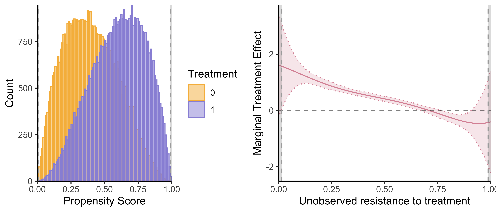
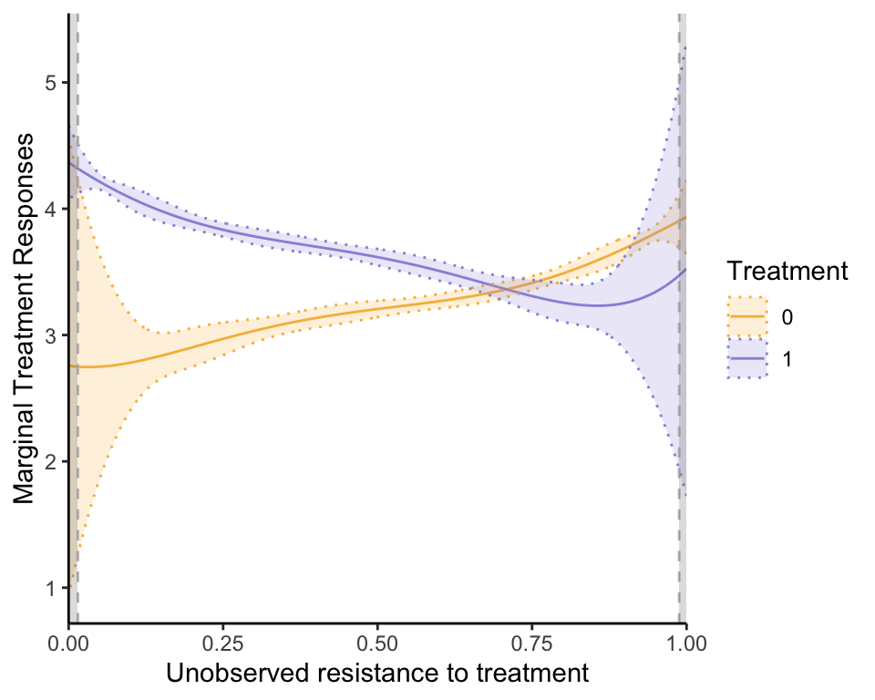

This package provides an implementation of semi-IV regressions as described in Bruneel-Zupanc (2024).

Installation
You can find the development version of semiIVreg from GitHub. You can download it from there and then install it directly from the local source on your computer:
# If the package is in a .tar.gz file
install.packages("/path/to/your/package.tar.gz", repos = NULL, type = "source")
# If the package is in a directory
install.packages("/path/to/your/package_directory", repos = NULL, type = "source")Alternatively, you can directly download it from the GitHub repository:
# install.packages("devtools")
devtools::install_github("cbruneelzupanc/semiIVreg")Semi-IV Regression
This illustrates what the semiivreg()command reports for a semi-IV regression. By default, it reports the common support plot of the propensity score and the estimated marginal treatment effects (MTE).
library(semiIVreg)
data(roydata) # load the data from a simulated Roy model
# semi-IV regression
semiiv = semiivreg(y~d|w0|w1, data=roydata) 
One can also easily extract a plot for the marginal treatment responses (MTR):
semiiv$plot$mtr
For more details, see the detailed documentation for each function and the detailed vignettes.